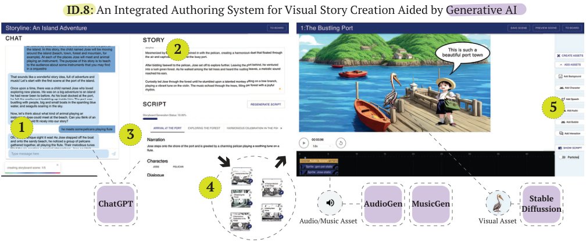
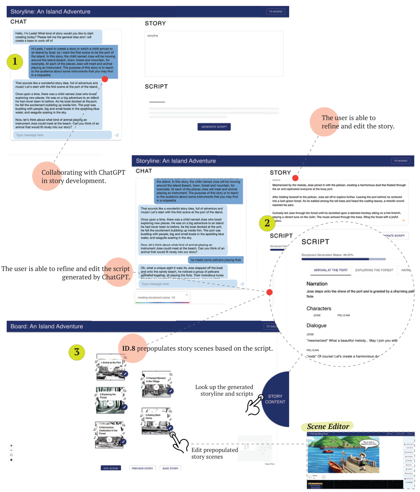
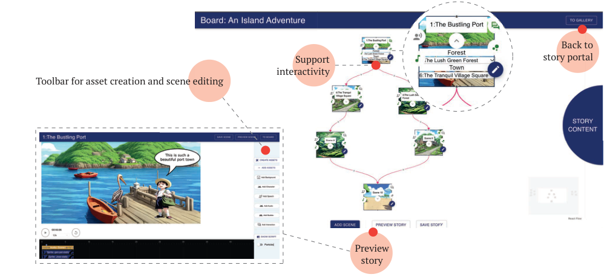
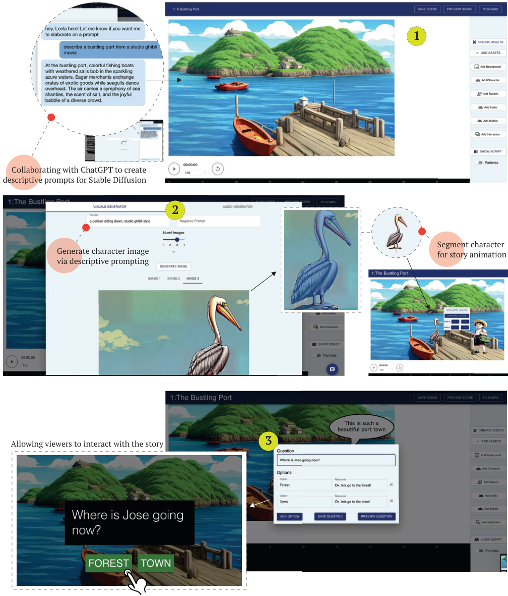
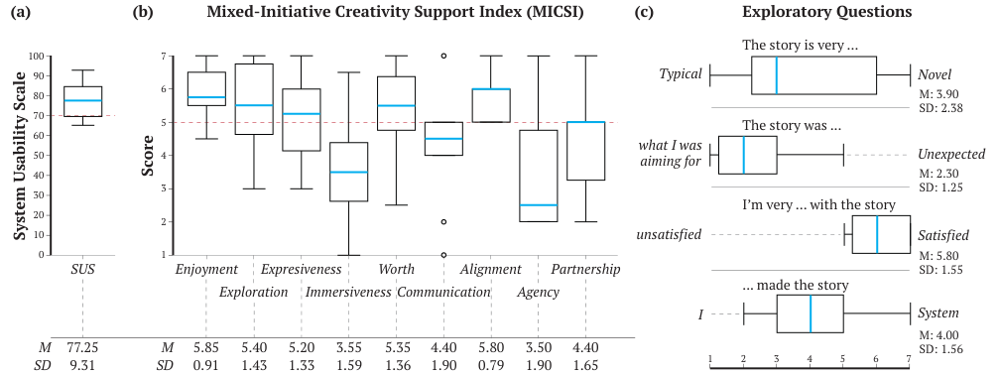
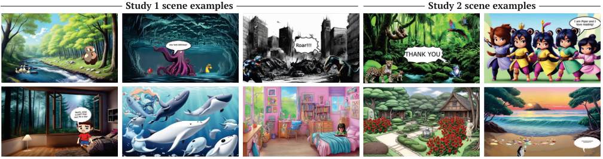
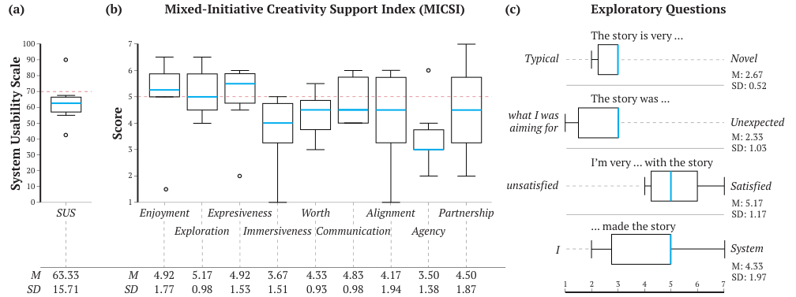
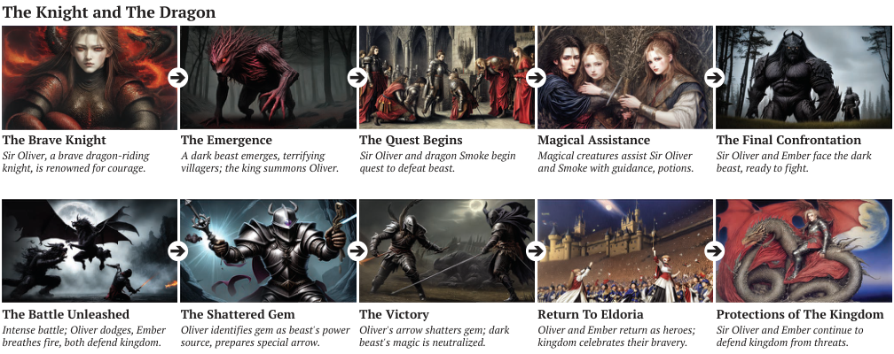

Studio / ID.8
ID.8
ID.8: Co-Creating Visual Stories with Generative AI
ACM TiiS Highlighted Paper
Victor Nikhil Antony and Chien-Ming Huang

Storytelling is an integral part of human culture and significantly impacts cognitive and socio-emotional development and connection. Despite the importance of interactive visual storytelling, the process of creating such content requires specialized skills and is labor-intensive.
This paper introduces ID.8, an open-source system designed for the co-creation of visual stories with generative AI. We focus on enabling an inclusive storytelling experience by simplifying the content creation process and allowing for customization.
Our user evaluation confirms a generally positive user experience in domains such as enjoyment and exploration, while highlighting areas for improvement, particularly in immersiveness, alignment, and partnership between the user and the AI system.
Design philosophy and criteria
ID.8 aims to balance user autonomy and AI assistance through a design philosophy centered on a “human-in-control, AI-in-the-loop” framework. We strive to combine the control, agency, safety and human touch intrinsic to manual story creation with the creative accessibility and efficiency gains offered by generative AI.
Enable end-to-end authoring
Authoring visual stories includes brainstorming, scripting, storyboarding, gathering media assets, synchronizing elements, refining the narrative, and delivering the story. ID.8 consolidates these disparate steps into a unified workflow.
Facilitate intuitive narrative assembly
Juggling narrative arcs and spatio-temporal asset pacing makes it hard to keep a coherent view of the story. ID.8 helps users establish robust mental models of the narrative structure through clear interaction cues and visual markers.
Amplify creative exploration
Generative models hold the potential for rapid creative exploration, amplifying individual creativity and imagination. ID.8 is designed to streamline the exploration and curation of AI-generated artifacts.
Safeguard creative autonomy
Loss of user autonomy and unsafe outputs can manifest when AI decisions take precedence over human input. ID.8 prioritizes user control, empowering users to evaluate, select, and integrate AI-generated assets.
Support modularity and extensions
With the rapid advancements in generative AI in mind, ID.8 is architected for modularity and extensibility, allowing for the integration of emerging state-of-the-art generative models.
System design
Users initiate story creation in the Storyline Creator, where they collaborate with ChatGPT (alias ‘Leela’) to create the story plot. ID.8 converts the storyline into a scene-by-scene script and pre-populates the scenes as nodes in the Storyboard; users then edit each scene in the Scene Editor. Users can watch the story as a whole or preview a single scene to experience the story as the viewer.
We developed ID.8 as an open-source ReactJS application. It uses REST API calls to remote servers for interactions with the generative models, supporting model updates as new models are introduced.


Storyline Creator
A co-screenwriting environment in which a ChatGPT-powered chatbot, nicknamed ‘Leela’, is pre-configured with an initial prompt to jointly craft narratives with the user. Leela poses questions, offers creative suggestions, and generates narrative components based on user input and feedback.
Creative control
Users focus on higher-level creative decisions, such as overarching plot design, character development, and thematic elements. They retain complete creative control and can directly edit and refine the story generated with Leela.
Script and scene nodes
ID.8 compiles the finalized story into an editable scene-by-scene script, with scene titles, narration, character lists, and dialogues generated via GPT-3.5. It also auto-generates a Storyboard node for each scene, with a monochromatic background visualized using Stable Diffusion.
Storyboard
A visual canvas that supports an interactive, node-based visualization of the narrative. Users create and link individual nodes, each representing a specific scene, to create a cohesive story structure and flow.
Narrative branching
The Storyboard supports conditional narrative branching through its interaction components, so that it functions as both a planning tool and an interactive blueprint for the story.

Scene Editor
A workspace for authoring and editing individual scenes, designed to enable quick creative exploration and iteration. On the Canvas, users directly view and manipulate visual elements like characters and speech bubbles; the timeline below coordinates their sequence and timing.
Asset Creator
A Visuals Generator using Stable Diffusion and an Audio Generator using AudioGen and MusicGen. Users can extract parts of a generated image as characters using Meta’s Segment Anything model, and author prompts together with Leela.
Speech Generator
Narration and dialogue are generated with Google Cloud Text-to-Speech. Users can adjust pitch and speed and save customized speech profiles for consistent voices across scenes.
Viewer interaction
Interactive questions can be appended at the conclusion of a scene. Depending on the viewer’s response, specific auditory feedback is triggered and the storyline may diverge.


Evaluating usability
We conducted an in-lab system evaluation to understand the usability of ID.8, the creative support provided by generative AI in the visual story authoring workflow, and whether users can generate different story elements using ID.8. Participants were allocated 75 minutes to compose a story of their choice and to visualize three scenes from that story.
We recruited 11 participants (6 female, 5 male), aged 19 to 28, with backgrounds including robotics, law and innovation consultancy; one was excluded from analysis due to a data collection failure. Both studies used the System Usability Scale (SUS) and the Mixed-Initiative Creativity Support Index (MICSI).

Usability
Participants found ID.8 easy to use (SUS M = 77.25, SD = 9.31) and recognized the value of the system in fast-tracking visual story authoring.
Enjoyment
The MICSI Enjoyment scores (M = 5.85, SD = 0.91) and interview feedback show how ID.8 facilitated an enjoyable authoring experience. Participants were satisfied with the stories they authored.
Partnership and agency
Participants perceived their contribution as balanced with the system’s, yet the Partnership score (M = 4.40) indicates a need for enhancing the sense of collaboration, and the low Agency score (M = 3.50) shows the system was generally perceived as a tool.
Immersiveness and communication
Scores for Immersiveness (M = 3.55) and Communication (M = 4.40) lagged behind, suggesting the need for a more immersive experience and better mechanisms for capturing user intentions.

“I think the image and the audio generation is quite interesting because yeah, if I would have done it myself, it would take a long time but using it is quite convenient for me and the chat with the LLM is quite useful.”
P1, Study 1
“It was really helpful for quickly iterating on new ideas and exploring potential broad strokes of the story ... Relative to me trying to sketch those out myself, it was really efficient.”
P8, Study 1
Evaluating co-creative potential
To better understand the creative width of ID.8 and to evaluate its human-AI co-creative experience in a less controlled setting, we conducted a longer-term, in-the-field study. We deployed ID.8 on participants’ personal devices and asked them to create a story of their choice over a week.
We recruited 6 participants (3 female, 3 male) who did not take part in Study 1, aged 24 to 25, with backgrounds including visual arts, education, public health and electrical engineering.

Usability
SUS (M = 63.33, SD = 15.71) and Enjoyment (M = 4.92) scores were lower than in Study 1, which may have been due to the overhead of launching Docker containers through a command line interface. Participants were still satisfied with the stories they authored.
Creative width
The study resulted in a collection of artistically diverse stories, each about 5 minutes in length. The creative diversity of these stories and the Exploration score (M = 5.17, SD = 0.98) indicate that ID.8 supports creative exploration reasonably well.
Learning curve
Users reported spending 7–8 hours exploring the system and producing their stories. Creating the first few scenes took most of the time; as they got used to the system, the creation process became faster.
Collaboration
Participants again felt that their contributions were equally matched by the system, but the Partnership (M = 4.50) and Agency (M = 3.50) scores spotlight the need for ID.8 to be perceived as a collaborator. Immersiveness (M = 3.67) was again low.

“By the end, I feel like I was more used to knowing what to do and each scene definitely the time spent became like shorter and shorter.”
P12, Study 2
“Thank you for letting me use the tool. It was cool and now I have it on my laptop. So I’ll keep using it.”
P14, Study 2
Design guidelines
Our findings on participants’ experiences with ID.8 can serve as a proxy for the kinds of multi-agent, multimodal human-AI interactions that are predicted to become the norm in creative work. We synthesized ten design guidelines for human-AI co-creative systems, organized by the challenges they address.
Users’ mental models of generative AI are weak
- Offer predesigned prompt templates with defined fields to streamline the input process and facilitate user intent communication with generative models.
- Provide a library of example outputs alongside the prompts that generated them.
- Leverage LLMs to assist users in crafting prompts that effectively communicate their creative vision to generative models.
- Use intuitive and semantically accurate descriptors or proxies for advanced model parameter controls.
Generative AI outputs biased and harmful content
Participants reported pornographic, gory, and racially biased outputs generated by the image generation model.
- Integrate safeguard measures such as trigger warnings and automatic content filters against harmful generative outputs to ensure the emotional well-being of users.
Strong human-AI partnership requires intuitive communication and dynamic collaboration
- Accept multiple input modalities to enable intuitive communication of intent.
- Support iterative co-creation through dynamic feedback loops.
- Provide parallel processing capabilities to facilitate a more dynamic, active co-creation experience.
Co-creative AI needs a unified identity and an adaptive workflow
- Establish a centralized AI identity within the system to streamline user experience, enhance the sense of partnership, and increase immersion.
- Adapt to individual creative workflows to encourage the exploration of a variety of creative directions.
“I mean, right now it did feel like there was a feeling of collaboration to it. But it was sort of like we trade off who’s the one working on it rather than maybe working on something more actively together.”
P8, on waiting for asset generation
“And then other times when I couldn’t quite get what I wanted, it kind of just took me in a new direction. I was like, oh, okay, I didn’t envision it like this, but this is really cool.”
P15, on creative exploration